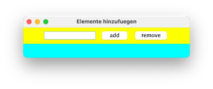

Übungen¶
Übung 1 (Git)¶
Übung 1
- Erstellen Sie sich einen GitHub-Account (oder wählen Sie einen anderen Git-Diensteanbieter)
- Erstellen Sie sich dort ein zentrales Repository
- Richten Sie Ihren
workspace, in dem Sie alle Ihre Entwicklungen in diesem Semester durchführen wollen (Übungen, Aufgaben, ...) als lokales Git-Repository ein - Synchroniseren Sie Ihr lokales und Ihr zentrales Git-Repository
Übung 2 (enum und zweidimensionale Arrays)¶
Übung 2
-
Gegeben ist die folgende Klasse
TicTacToe:1 2 3 4 5 6 7 8 9 10 11 12 13 14 15 16 17 18 19 20 21
package uebungen.uebung2; public class TicTacToe { enum State {EMPTY, RED, BLACK}; State[][] field; public TicTacToe() { field = new State[3][3]; for(int i=0; i<field.length; i++) for(int j=0; j<field[i].length; j++) field[i][j]=State.EMPTY; } public void makeMove(int i, int j, State player) { if(field[i][j]==State.EMPTY && player!=State.EMPTY) field[i][j]=player; } } -
Fügen Sie alle notwendigen Klammern
{ }ein, so dass die Anweisungsblöcke korrekt geklammert sind. -
Erweitern Sie die Klasse
TicTacToeum eineprint()-Methode, die das Spielfeld auf die Konsole ausgibt (Setzen Sie z.B. für den PlayerREDeinxund für den PlayerBlackeinound fürEMPTYein Leerzeichen oder ein-). Die Ausgabe nach jeweils 2 Zügen vonREDundBLACKkönnte dann z.B. so aussehen:- o o - x - - - x -
Erweitern Sie die Klasse
TicTacToeum einegewonnen()-Methode (true, wenn ein Spieler drei Felder horizontal, diagonal oder vertikal belegt hat; ansonstenfalse). - Erweitern Sie die Klasse
TicTacToeum eineunentschieden()-Methode (true, wenn alle Felder besetzt sind, aber kein Spieler gewonnen hat; ansonstenfalse). - Erstellen Sie eine Test-Klasse mit
main()-Methode. Erstellen sie darin ein Objekt der KlasseTicTacToe. Führen Sie Züge aus (makeMove()) und prüfen Sie, ob gewonnen wurde oder unentschieden ist (mit entsprechenden Ausgaben). -
Für 6. müssen Sie in der Testklasse Ihr
enum Stateimportieren. Warum ist das so? Was könnten Sie machen, damit das nicht notwendig ist? -
Zusatz: Sie können die Klasse
TicTacToebeliebig erweitern, z.B.:- um Ausgaben, wenn gewonnen bzw. es unentschieden ist,
- um Fehler in den Indizes
iundjbei dermakeMove()-Methode abzufangen, - eine Methode
spielen()implementieren, die zufällig für die Spieler die Steine setzt usw.
Viel Spaß!
Video zu Übung 2 (TicTacToe)
mögliche Lösung für Übung 2
1 2 3 4 5 6 7 8 9 10 11 12 13 14 15 16 17 18 19 20 21 22 23 24 25 26 27 28 29 30 31 32 33 34 35 36 37 38 39 40 41 42 43 44 45 46 47 48 49 50 51 52 53 54 55 56 57 58 59 60 61 62 63 64 65 66 67 68 69 70 71 72 73 74 75 76 77 78 79 80 81 82 83 84 85 86 87 88 89 90 91 92 93 94 95 96 97 98 99 100 101 102 103 104 105 106 107 108 109 110 111 112 113 114 115 116 117 118 119 120 121 122 123 124 125 126 127 128 129 130 131 132 133 134 135 136 137 138 139 140 141 142 143 144 145 146 147 148 149 150 151 152 153 154 155 156 157 158 159 160 161 162 163 164 165 166 167 | |
1 2 3 4 5 | |
1 2 3 4 5 6 7 8 9 10 11 12 13 14 15 16 17 18 19 20 21 22 23 24 25 26 27 28 29 30 31 32 33 34 35 36 37 38 39 40 41 42 43 44 45 46 | |
Übung 3 (Exceptions)¶
Übung 3
-
Schreiben Sie ein Programm zur Eingabe von zwei Zahlen mithilfe der Klasse
JOptionPaneaus dem und deren Division! Fangen Sie folgende Ausnahmen ab:- Falls die Eingabe keiner Zahl entspricht.
- Falls die zweite Zahl eine 0 ist.
-
Scenario:
- Fenster zur Eingabe von Zahl 1 öffnet sich:

- falsche Eingabe - keine Zahl:

- Fenster öffnet sich erneut (andere Nachricht!):

- Fenster zur Eingabe von Zahl 2 öffnet sich:

- die Division Zahl1/Zahl2 schlägt fehl (
ArithmeticException), deshalb (andere Nachricht!):

- Ergebnis

- Fenster zur Eingabe von Zahl 1 öffnet sich:
-
Lagern Sie eine solche Eingabemöglichkeit in eine wiederverwendbare Methode aus, z.B.
public int inputInt(int min, int max), welche die eingegebene Zahl zurückgibt, wobei die eingegebene Zahl im Bereich[min, max]liegen muss. -
Lesen Sie eine Anzahl von Sekunden ein und schreiben Sie eine Umrechnung, so dass folgende Ausgabe entsteht (die Eingabe ist hier über die Konsole gezeigt) :
Gib eine Anzahl von Sekunden ein: 3456789 3456789 Sekunden sind 40 Tage, 13 Minuten, 9 Sekunden.Gib eine Anzahl von Sekunden ein: 2345678 2345678 Sekunden sind 27 Tage, 3 Stunden, 34 Minuten, 38 Sekunden.Gib eine Anzahl von Sekunden ein: 123456 123456 Sekunden sind 1 Tag, 10 Stunden, 17 Minuten, 36 Sekunden.Gib eine Anzahl von Sekunden ein: 12345 12345 Sekunden sind 3 Stunden, 25 Minuten, 45 Sekunden. -
Lesen Sie eine Zahl ein und geben Sie die Quersumme der Zahl aus.
Viel Spaß!
Video zu Übung 3 (Exceptions)
mögliche Lösung für Übung 3
1 2 3 4 5 6 7 8 9 10 11 12 13 14 15 16 17 18 19 20 21 22 23 24 25 26 27 28 29 30 31 32 33 34 35 36 37 38 39 40 41 42 43 44 45 46 47 48 49 50 51 52 53 54 55 56 57 58 59 60 61 62 63 64 65 66 67 68 69 70 71 72 73 74 75 76 77 78 79 80 81 82 83 84 85 86 87 88 89 90 91 92 93 94 95 96 97 98 99 100 101 102 103 104 105 106 | |
1 2 3 | |
Übung 4 (Test-driven development)¶
Warning
Diese Übung lassen wir weg. Am 6.5.2021 machen wir stattdessen gleich Übung 5. Das hat den Vorteil, dass wir den Stoff von Vorlesung und Übung wieder zeitlich dichter zusammenziehen (Mittwoch Vorlesung und Donnerstag dazugehörige Übung). Außerdem fällt die Übung am 13.5. wegen des Feiertages weg und somit wäre die Lücke noch größer.
Übung 4
-
Implementieren Sie eine Methode
public static int strStr(String haystack, String needle)durch testgetriebene Entwicklung. Die Methode gibt den Anfangsindex des ersten Auftretens vonneedleinhaystackaus, z.B.Wenn// Beispiel 1 Input: haystack = "hello", needle = "ll" Output: 2 // ll beginnt am Index 2 // Beispiel 2 Input: haystack = "aaaaa", needle = "bba" Output: -1 // bba kommt nicht vor // Beispiel 3 Input: haystack = "", needle = "" Output: 0 // "leerer" String ueberall, also auch bei 0needlenicht inhaystackenthalten ist, wird-1zurückgegeben. -
Implementieren Sie eine Methode
public static int[][] permutations(int[] nums)durch testgetriebene Entwicklung. Die Methode gibt ein Array vonint-Arrays zurück, welches alle Permutationen der Zahlen ausnumsenthält, z.B.Sie dürfen folgende Annahmen treffen:// Beispiel 1 Input: nums = [1,2,3] Output: [[1,2,3],[1,3,2],[2,1,3],[2,3,1],[3,1,2],[3,2,1]] // Beispiel 2 Input: nums = [0,1] Output: [[0,1],[1,0]] // Beispiel 3 Input: nums = [1] Output: [[1]]1 <= nums.length <= 6-10 <= nums[i] <= 10numsenthält keine Doppelungen
Viel Spaß!
Übung 5 (Listen und Mengen)¶
Übung 5
- Erstellen Sie eine Klasse
Uebung5mitmain()-Methode. - Definieren Sie in der
main()-Methode eine Variablewordsvom TypString[]und weisen Sie dieser Variablen folgende Werte zu:String[] words = {"Linux", "Apple", "Facebook", "Amazon", "IBM", "Lenovo", "Google", "IBM", "Microsoft", "Apple", "Google", "Twitter", "Skype", "Chrome", "Linux", "Firefox"};
A. Listen (List)
- Erstellen Sie eine Methode
public static List<String> createArrayList(String[] words). In dieser Methode soll eineArrayListerstellt werden. Alle Elemente in dieser Liste sind vom TypString. Befüllen Sie diese Liste mit allen Wörtern aus demwords-Array. Die Methode gibt die befüllte Liste (List) zurück. - Erstellen Sie eine Methode
public static void printList(List<String> list). Diese Methode gibt alle Elemente der Listelistauf der Konsole aus. Geben Sie auch die Anzahl der Elemente der Liste aus. - Erstellen Sie in der
main()-Methode mithilfe der MethodecreateArrayList(words)eine Liste und speichern Sie diese Liste in einer Variablen vom TypList<String>. Geben Sie alle Elemente dieser Liste mithilfe der MethodeprintList()auf der Konsole aus. -
Studieren Sie alle Methoden für
Listunter https://docs.oracle.com/en/java/javase/11/docs/api/java.base/java/util/List.html.-
Ermitteln Sie den Index in der Liste, in der
"Apple"das erste Mal auftaucht. Erzeugen Sie folgende Ausgabe:Index des ersten Auftretens von Apple : 1 -
Ermitteln Sie den Index in der Liste, in der
"Apple"das letzte Mal auftaucht. Erzeugen Sie folgende Ausgabe:Index des letzten Auftretens von Apple : 9 -
Geben Sie den Wert des ersten Elementes der Liste aus. Erzeugen Sie folgende Ausgabe:
erstes Element der Liste : Linux -
Geben Sie den Wert des letzten Elementes der Liste aus. Erzeugen Sie folgende Ausgabe:
letztes Element der Liste : Firefox -
Löschen Sie die Werte
"Apple","Google"und"Facebook". Geben Sie die Liste erneut mithilfe derprintList(list)-Methode aus.
-
B. Mengen (Set)
- Erstellen Sie eine Methode
public static Set<String> createHashSet(String[] words). In dieser Methode soll eineHashSeterstellt werden. Alle Elemente in dieser Liste sind vom TypString. Befüllen Sie diese Liste mit allen Wörtern aus demwords-Array. Die Methode gibt die befüllte Menge (Set) zurück. - Erstellen Sie eine Methode
public static void printSet(Set<String> set). Diese Methode gibt alle Elemente der Mengesetauf der Konsole aus. Geben Sie auch die Anzahl der Elemente der Menge aus. - Erstellen Sie in der
main()-Methode mithilfe der MethodecreateHashSet(words)eine Menge und speichern Sie diese Menge in einer Variablen vom TypSet<String>. Geben Sie alle Elemente dieser Menge mithilfe der MethodeprintSet()auf der Konsole aus. Was beobachten Sie in Bezug auf die Anzahl der Elemente im Vergleich zur Anzahl der Elemente in der Liste? Warum ist das so? - Erstellen Sie eine Methode
public static Set<String> createTreeSet(String[] words). In dieser Methode soll eineTreeSeterstellt werden. Alle Elemente in dieser Liste sind vom TypString. Befüllen Sie diese Menge (Set) mit allen Wörtern aus demwords-Array. Die Methode gibt die befüllte Menge (Set) zurück. - Erstellen Sie in der
main()-Methode mithilfe der MethodecreateTreeSet(words)eine Menge und speichern Sie diese Menge in einer Variablen. Geben Sie alle Elemente dieser Menge mithilfe der MethodeprintSet()auf der Konsole aus. Was beobachten Sie in Bezug auf die Sortierung der Elemente im Vergleich zurHashSet?
Zusatz
- Erstellen Sie für die Liste eine Methode
public static List<String> findDoublets(List<String> list). Diese Methode erstellt eine Liste, in der alle Elemente enthalten sind, die inlistdoppelt vorkommen. Diese Elemente werden dann auch doppelt in die Resultat-Liste übernommen. Geben Sie diese Liste mithilfe derprintList()-Methode in dermain()-Methode aus.
Mögliche Ausgabe (je nach Reihenfolge des Aufrufs der Methoden)
Liste mit 16 Elementen :
--------------------------
Linux
Apple
Facebook
Amazon
IBM
Lenovo
Google
IBM
Microsoft
Apple
Google
Twitter
Skype
Chrome
Linux
Firefox
Index des ersten Auftretens von Apple : 1
Index des letzten Auftretens von Apple : 9
erstes Element in der Liste : Linux
letztes Element in der Liste : Firefox
Liste mit 13 Elementen :
--------------------------
Linux
Amazon
IBM
Lenovo
IBM
Microsoft
Apple
Google
Twitter
Skype
Chrome
Linux
Firefox
Doublets-
Liste mit 4 Elementen :
--------------------------
Linux
IBM
IBM
Linux
ohne Doublets-
Liste mit 9 Elementen :
--------------------------
Amazon
Lenovo
Microsoft
Apple
Google
Twitter
Skype
Chrome
Firefox
Menge mit 12 Elementen :
--------------------------
Lenovo
Google
Apple
Skype
Linux
IBM
Twitter
Chrome
Microsoft
Amazon
Facebook
Firefox
Menge mit 12 Elementen :
--------------------------
Amazon
Apple
Chrome
Facebook
Firefox
Google
IBM
Lenovo
Linux
Microsoft
Skype
Twitter
Video zu Übung 5 (Listen und Mengen)
mögliche Lösung für Übung 5 - aus der Übung von Frau Busjahn (mit Kommentaren)
1 2 3 4 5 6 7 8 9 10 11 12 13 14 15 16 17 18 19 20 21 22 23 24 25 26 27 28 29 30 31 32 33 34 35 36 37 38 39 40 41 42 43 44 45 46 47 48 49 50 51 52 53 54 55 56 57 58 59 60 61 62 63 64 65 66 67 68 69 70 71 72 73 74 75 76 77 78 79 80 81 82 83 84 85 86 87 88 89 90 91 92 93 94 95 96 97 98 99 100 101 102 103 104 105 106 107 108 109 110 111 112 113 114 115 116 117 118 119 120 121 122 123 124 125 126 127 128 129 130 131 132 133 134 135 136 137 138 139 140 141 142 143 144 145 146 147 148 149 150 151 152 153 154 155 156 157 158 159 160 161 162 163 164 165 166 167 168 169 170 171 172 173 174 175 176 177 178 179 180 181 182 183 184 185 186 187 188 189 190 191 192 193 194 195 196 197 198 199 200 201 202 203 204 205 | |
Übung 6 (Wrapper-Klassen und Maps)¶
Übung 6
-
Erstellen Sie eine Klasse
Stadtmit folgenden Objektvariablen:String name;List<Integer> bevoelkerung;float flaeche;
-
Erstellen Sie für die Klasse
Stadteinen parametrisierten Konstruktorpublic Stadt(String name, List<Integer> bevoelkerung, float flaeche), der die Objektvariablen initialisiert. - Erstellen Sie für die Klasse
Stadteineprint()-Methode, so dass eine Ausgabe auf der Konsole in folgender Form erscheint (Bsp.):Berlin 891,68 km2 3.382.169 3.460.725 3.574.830 - Erstellen Sie eine Klasse
StadtTestmitmain()-Methode. Kopieren Sie in die Klasse die Methodepublic static Stadt[] staedte()hinein:public static Stadt[] staedte() { Stadt[] staedte = new Stadt[6]; List<Integer> berlinBevoelkerung = new ArrayList<>(); berlinBevoelkerung.add(3382169); berlinBevoelkerung.add(3460725); berlinBevoelkerung.add(3574830); staedte[0] = new Stadt("Berlin", berlinBevoelkerung, 891.68f); List<Integer> hamburgBevoelkerung = new ArrayList<>(); hamburgBevoelkerung.add(1715392); hamburgBevoelkerung.add(1786448); hamburgBevoelkerung.add(1810438); staedte[1] = new Stadt("Hamburg", hamburgBevoelkerung, 755.22f); List<Integer> muenchenBevoelkerung = new ArrayList<>(); muenchenBevoelkerung.add(1210223); muenchenBevoelkerung.add(1353186); muenchenBevoelkerung.add(1464301); staedte[2] = new Stadt("Muenchen", muenchenBevoelkerung, 310.70f); List<Integer> koelnBevoelkerung = new ArrayList<>(); koelnBevoelkerung.add(962884); koelnBevoelkerung.add(1007119); koelnBevoelkerung.add(1075935); staedte[3] = new Stadt("Koeln", koelnBevoelkerung, 405.02f); List<Integer> frankfurtBevoelkerung = new ArrayList<>(); frankfurtBevoelkerung.add(648550); frankfurtBevoelkerung.add(679664); frankfurtBevoelkerung.add(736414); staedte[4] = new Stadt("Frankfurt/Main", frankfurtBevoelkerung, 248.31f); berlinBevoelkerung = new ArrayList<>(); berlinBevoelkerung.add(3382169); berlinBevoelkerung.add(3460725); berlinBevoelkerung.add(3574830); staedte[5] = new Stadt("Berlin", berlinBevoelkerung, 891.68f); return staedte; }
Liste
- Erstellen Sie in der
main()-Methode eineList<Stadt> staedteListe = new ArrayList<>();. Fügen Sie derstaedteListealle Städte aus dem durch Aufruf derstaedte()-Methode erzeugtem Array zu. - Geben Sie alle Informationen über alle Städte aus der Liste unter Verwendung der
print()-Methode aus der KlasseStadtaus.
Menge
- Erstellen Sie in der
main()-Methode eineSet<Stadt> staedteMenge = new HashSet<>();. Fügen Sie derstaedteMengealle Städte aus dem durch Aufruf derstaedte()-Methode erzeugtem Array zu. - Geben Sie alle Informationen über alle Städte aus der Liste unter Verwendung der
print()-Methode aus der KlasseStadtaus. - Berlin erscheint doppelt, obwohl eine Menge keine doppelten Elemente enthalten darf. Warum?
Stadt - Teil 2
- Implementieren Sie in der Klasse
Stadtdieequals(Object)- und diehashCode()-Methode. - Führen Sie danach die
StadtTest-Klasse erneut aus. Was hat sich an der Menge geändert?
Maps
- Erstellen Sie in der
main()-Methode eineMap<Integer, Stadt> staedteMap = new HashMap<>();. Fügen Sie derstaedteMapeinen fortlaufenden, eindeutigenInteger-Wert beginnend mit1als Key sowie alle alle Städte aus dem durch Aufruf derstaedte()-Methode erzeugtem Array als Value hinzu. - Geben Sie alle Informationen über alle Städte aus der Liste unter Verwendung der
print()-Methode aus der KlasseStadtaus. Beginnen Sie die Zeile jeweils mit der Ausgabe des Keys.
Ausgaben
------------ Liste --------------
Berlin 891,68 km2 3.382.169 3.460.725 3.574.830
Hamburg 755,22 km2 1.715.392 1.786.448 1.810.438
Muenchen 310,70 km2 1.210.223 1.353.186 1.464.301
Koeln 405,02 km2 962.884 1.007.119 1.075.935
Frankfurt/Main 248,31 km2 648.550 679.664 736.414
Berlin 891,68 km2 3.382.169 3.460.725 3.574.830
------------ Menge --------------
Frankfurt/Main 248,31 km2 648.550 679.664 736.414
Berlin 891,68 km2 3.382.169 3.460.725 3.574.830
Muenchen 310,70 km2 1.210.223 1.353.186 1.464.301
Koeln 405,02 km2 962.884 1.007.119 1.075.935
Hamburg 755,22 km2 1.715.392 1.786.448 1.810.438
------------ Maps --------------
1 Berlin 891,68 km2 3.382.169 3.460.725 3.574.830
2 Hamburg 755,22 km2 1.715.392 1.786.448 1.810.438
3 Muenchen 310,70 km2 1.210.223 1.353.186 1.464.301
4 Koeln 405,02 km2 962.884 1.007.119 1.075.935
5 Frankfurt/Main 248,31 km2 648.550 679.664 736.414
6 Berlin 891,68 km2 3.382.169 3.460.725 3.574.830
die von Frau Busjahn vorkommentierten Klassen
1 2 3 4 5 6 7 8 9 10 11 12 13 14 15 16 17 18 19 20 21 22 23 24 25 26 27 28 29 30 31 32 33 34 35 36 37 38 39 40 41 42 43 44 45 46 47 48 49 50 51 52 53 54 55 56 57 58 59 60 61 62 63 64 65 66 | |
1 2 3 4 5 6 7 8 9 10 11 12 13 14 15 16 17 18 19 20 21 22 23 24 25 26 27 28 29 30 31 32 33 34 35 36 37 38 39 40 41 42 43 44 45 46 47 48 49 50 51 52 53 54 55 56 57 58 59 60 61 62 63 64 65 66 67 68 69 70 71 72 73 74 75 76 77 78 79 80 81 82 83 84 85 86 87 88 89 90 91 92 93 94 95 96 97 98 | |
Video zu Übung 6 (Wrapper-Klassen und Maps)
mögliche Lösung für Übung 6 (aus dem Video - mit compareTo - den Teil mit TreeSet und compareTo müssen Sie aber nicht beachten, kommt nächste Woche)
1 2 3 4 5 6 7 8 9 10 11 12 13 14 15 16 17 18 19 20 21 22 23 24 25 26 27 28 29 30 31 32 33 34 35 36 37 38 39 40 41 42 43 44 45 46 47 48 49 50 51 52 53 54 55 56 57 58 59 60 61 62 63 64 65 66 67 68 69 70 71 72 73 74 75 76 77 78 79 80 81 82 83 84 85 86 87 88 89 90 91 92 93 | |
1 2 3 4 5 6 7 8 9 10 11 12 13 14 15 16 17 18 19 20 21 22 23 24 25 26 27 28 29 30 31 32 33 34 35 36 37 38 39 40 41 42 43 44 45 46 47 48 49 50 51 52 53 54 55 56 57 58 59 60 61 62 63 64 65 66 67 68 69 70 71 72 73 74 75 76 77 78 79 80 81 82 83 84 85 86 87 88 89 90 91 92 93 94 95 96 97 98 99 100 101 102 103 104 105 106 107 108 109 110 111 112 113 114 115 116 117 118 119 120 121 122 123 124 125 126 127 128 129 130 131 132 133 134 135 136 137 138 139 140 141 142 143 144 | |
eine andere mögliche Lösung für Übung 6 (aus der Übung von Frau Busjahn)
1 2 3 4 5 6 7 8 9 10 11 12 13 14 15 16 17 18 19 20 21 22 23 24 25 26 27 28 29 30 31 32 33 34 35 36 37 38 39 40 41 42 43 44 45 46 47 48 49 50 51 52 53 54 55 56 57 58 59 60 61 62 63 64 65 66 67 68 69 70 71 72 73 74 75 76 77 78 79 80 81 | |
1 2 3 4 5 6 7 8 9 10 11 12 13 14 15 16 17 18 19 20 21 22 23 24 25 26 27 28 29 30 31 32 33 34 35 36 37 38 39 40 41 42 43 44 45 46 47 48 49 50 51 52 53 54 55 56 57 58 59 60 61 62 63 64 65 66 67 68 69 70 71 72 73 74 75 76 77 78 79 80 81 82 83 84 85 86 87 88 89 90 91 92 93 94 95 96 97 98 99 100 101 102 103 104 105 106 107 108 109 110 111 112 113 114 115 116 117 118 119 120 121 122 123 | |
Übung 7 (Interfaces)¶
Übung 7
-
Wir beschäftigen uns nochmal mit der Übung 6, d.h. mit
StadtundStadtTest. Dieses Mal geht es uns aber mehr um die Verwendung des InterfacesComparable. Zunächst sind die beiden KlassenStadtundStadtTestwie folgt gegeben (das haben wir so in Übung 6 erarbeitet - es gibt eine Änderung inStadtTest, dort benutzen wir jetzt ):import java.util.*; public class Stadt { String name; List<Integer> bevoelkerung; float flaeche; public Stadt(String name, List<Integer> bevoelkerung, float flaeche) { super(); this.name = name; this.bevoelkerung = bevoelkerung; this.flaeche = flaeche; } void print() { System.out.printf("%-15s %9.2f km2 ", name, flaeche); for(Integer i : bevoelkerung) { System.out.printf("%,12d", i); } System.out.println(); } @Override public boolean equals(Object o) { if(o==null) return false; if(o==this) return true; if(this.getClass()!=o.getClass()) return false; Stadt other = (Stadt)o; return (this.name.equals(other.name)); } @Override public int hashCode() { return this.name.hashCode(); } }public class StadtTest { public static Stadt[] staedte() { Stadt[] staedte = new Stadt[6]; List<Integer> berlinBevoelkerung = new ArrayList<>(); berlinBevoelkerung.add(3382169); berlinBevoelkerung.add(3460725); berlinBevoelkerung.add(3574830); staedte[0] = new Stadt("Berlin", berlinBevoelkerung, 891.68f); List<Integer> hamburgBevoelkerung = new ArrayList<>(); hamburgBevoelkerung.add(1715392); hamburgBevoelkerung.add(1786448); hamburgBevoelkerung.add(1810438); staedte[1] = new Stadt("Hamburg", hamburgBevoelkerung, 755.22f); List<Integer> muenchenBevoelkerung = new ArrayList<>(); muenchenBevoelkerung.add(1210223); muenchenBevoelkerung.add(1353186); muenchenBevoelkerung.add(1464301); staedte[2] = new Stadt("Muenchen", muenchenBevoelkerung, 310.70f); List<Integer> koelnBevoelkerung = new ArrayList<>(); koelnBevoelkerung.add(962884); koelnBevoelkerung.add(1007119); koelnBevoelkerung.add(1075935); staedte[3] = new Stadt("Koeln", koelnBevoelkerung, 405.02f); List<Integer> frankfurtBevoelkerung = new ArrayList<>(); frankfurtBevoelkerung.add(648550); frankfurtBevoelkerung.add(679664); frankfurtBevoelkerung.add(736414); staedte[4] = new Stadt("Frankfurt/Main", frankfurtBevoelkerung, 248.31f); berlinBevoelkerung = new ArrayList<>(); berlinBevoelkerung.add(3382169); berlinBevoelkerung.add(3460725); berlinBevoelkerung.add(3574830); staedte[5] = new Stadt("Berlin", berlinBevoelkerung, 891.68f); return staedte; } public static void main(String[] args) { System.out.printf("%n------------ Menge --------------%n"); Set<Stadt> staedteMenge = new HashSet<>(); for(Stadt s : staedte()) { staedteMenge.add(s); } for(Stadt s : staedteMenge) { s.print(); } System.out.printf("%n------------ Maps --------------%n"); Map<MyInteger, Stadt> staedteMap = new HashMap<>(); int i = 1; for(Stadt s : staedte()) { staedteMap.put(new MyInteger(i++), s); } for(Map.Entry<MyInteger, Stadt> entry : staedteMap.entrySet()) { MyInteger key = entry.getKey(); System.out.printf("%-3d",key.intValue()); entry.getValue().print(); } } } -
Für die Schlüssel in der
Mapbenutzen wir die selbstgeschriebne KlasseMyInteger:public class MyInteger { private int value; public MyInteger(int value) { this.value = value; } public int intValue() { return this.value; } public static MyInteger valueOf(int value) { return new MyInteger(value); } } -
Ändern Sie in der
StadtTest.javaden Konstruktoraufruf derSetvonHashSetnachTreeSetund führen Sie die Klasse aus - es wird eine Exception geworfen (Stadt cannot be cast to class java.lang.Comparable). Implementieren Sie fürStadtdas InterfaceComparable<Stadt>so, dass nach den Namen der Städte sortiert wird. Führen Sie dann erneutStadtTest.javaaus. Es sollte folgende Ausgabe für dieSeterzeugt werden:------------ Menge -------------- Berlin 891,68 km2 3.382.169 3.460.725 3.574.830 Frankfurt/Main 248,31 km2 648.550 679.664 736.414 Hamburg 755,22 km2 1.715.392 1.786.448 1.810.438 Koeln 405,02 km2 962.884 1.007.119 1.075.935 Muenchen 310,70 km2 1.210.223 1.353.186 1.464.301 -
Ändern Sie
compareTo()inStadtso, dass die Namen der Städte absteigend sortiert werden und führen Sie dannStadtTest.javaerneut aus. Es sollte folgende Ausgabe erzeugt werden:------------ Menge -------------- Muenchen 310,70 km2 1.210.223 1.353.186 1.464.301 Koeln 405,02 km2 962.884 1.007.119 1.075.935 Hamburg 755,22 km2 1.715.392 1.786.448 1.810.438 Frankfurt/Main 248,31 km2 648.550 679.664 736.414 Berlin 891,68 km2 3.382.169 3.460.725 3.574.830 -
Ändern Sie
compareTo()inStadtso, dass die Städte absteigend nach ihrer Fläche sortiert werden und führen Sie dannStadtTest.javaerneut aus. Es sollte folgende Ausgabe erzeugt werden:------------ Menge -------------- Berlin 891,68 km2 3.382.169 3.460.725 3.574.830 Hamburg 755,22 km2 1.715.392 1.786.448 1.810.438 Koeln 405,02 km2 962.884 1.007.119 1.075.935 Muenchen 310,70 km2 1.210.223 1.353.186 1.464.301 Frankfurt/Main 248,31 km2 648.550 679.664 736.414 -
Ändern Sie in der
StadtTest.javaden Konstruktoraufruf derMapvonHashMapnachTreeMapund führen Sie die Klasse aus - es wird eine Exception geworfen (MyInteger cannot be cast to class java.lang.Comparable). Implementieren Sie fürMyIntegerdas InterfaceComparable<MyInteger>so, dass nach den Größen der Werte sortiert wird. Führen Sie dann erneutStadtTest.javaaus. Es sollte folgende Ausgabe für dieMaperzeugt werden:------------ Maps -------------- 1 Berlin 891,68 km2 3.382.169 3.460.725 3.574.830 2 Hamburg 755,22 km2 1.715.392 1.786.448 1.810.438 3 Muenchen 310,70 km2 1.210.223 1.353.186 1.464.301 4 Koeln 405,02 km2 962.884 1.007.119 1.075.935 5 Frankfurt/Main 248,31 km2 648.550 679.664 736.414 6 Berlin 891,68 km2 3.382.169 3.460.725 3.574.830 -
Ändern Sie
compareTo()inMyIntegerso, dass die Werte der Schlüssel absteigend sortiert werden und führen Sie dannStadtTest.javaerneut aus. Es sollte folgende Ausgabe erzeugt werden:------------ Maps -------------- 6 Berlin 891,68 km2 3.382.169 3.460.725 3.574.830 5 Frankfurt/Main 248,31 km2 648.550 679.664 736.414 4 Koeln 405,02 km2 962.884 1.007.119 1.075.935 3 Muenchen 310,70 km2 1.210.223 1.353.186 1.464.301 2 Hamburg 755,22 km2 1.715.392 1.786.448 1.810.438 1 Berlin 891,68 km2 3.382.169 3.460.725 3.574.830 -
Zusatz: Schreiben Sie in
StadtTest.javaeine Methodepublic static boolean contains(Map<MyInteger, Stadt> staedteMap, Stadt stadt), die eintruezurückgibt, wenn die Stadtstadtbereits in derstaedteMapals einvalueexistiert. Tipp: Die Methodeget(Object key)ausMapgibt den zukeygehörigenvaluezurück und mitkeySet()bekommt man die Menge allerkeysaus derMapermittelt. Testen Sie die Methode, indem Sie zur Menge nur dann diestadthinzufügen, wenn sie nicht bereits in der Menge aufgeführt ist. Sie sollten folgende Ausgabe erhalten:------------ Maps -------------- 5 Frankfurt/Main 248,31 km2 648.550 679.664 736.414 4 Koeln 405,02 km2 962.884 1.007.119 1.075.935 3 Muenchen 310,70 km2 1.210.223 1.353.186 1.464.301 2 Hamburg 755,22 km2 1.715.392 1.786.448 1.810.438 1 Berlin 891,68 km2 3.382.169 3.460.725 3.574.830 -
Vorkommentierte Klassen:
import java.util.*; //3. Implementieren Sie für Stadt das Interface Comparable<Stadt> so, //dass nach den Namen der Städte sortiert wird. public class Stadt implements?/extends? Comparable<Stadt> { String name; List<Integer> bevoelkerung; float flaeche; public Stadt(String name, List<Integer> bevoelkerung, float flaeche) { super(); this.name = name; this.bevoelkerung = bevoelkerung; this.flaeche = flaeche; } void print() { System.out.printf("%-15s %9.2f km2 ", name, flaeche); for(Integer i : bevoelkerung) { System.out.printf("%,12d", i); } System.out.println(); } @Override public boolean equals(Object o) { if(o==null) return false; if(o==this) return true; if(this.getClass()!=o.getClass()) return false; Stadt other = (Stadt)o; return (this.name.equals(other.name)); } @Override public int hashCode() { return this.name.hashCode(); } //3. Ändern Sie compareTo() in Stadt so, dass nach den Namen der //Städte sortiert werden kann. //4. Ändern Sie compareTo() in Stadt so, dass die Namen der //Städte absteigend sortiert werden //5. Ändern Sie compareTo() in Stadt so, //dass die Städte absteigend nach ihrer Fläche sortiert werden. //Beispiel aus dem Script //@Override //public int compareTo(Circle o) { // if(this.radius > o.radius) return 1; // else if(this.radius < o.radius) return -1; // else return 0; // this.radius == o.radius //} @Override public int compareTo(??? ???) { } }import java.util.*; public class StadtTest { public static Stadt[] staedte() { Stadt[] staedte = new Stadt[6]; List<Integer> berlinBevoelkerung = new ArrayList<>(); berlinBevoelkerung.add(3382169); berlinBevoelkerung.add(3460725); berlinBevoelkerung.add(3574830); staedte[0] = new Stadt("Berlin", berlinBevoelkerung, 891.68f); List<Integer> hamburgBevoelkerung = new ArrayList<>(); hamburgBevoelkerung.add(1715392); hamburgBevoelkerung.add(1786448); hamburgBevoelkerung.add(1810438); staedte[1] = new Stadt("Hamburg", hamburgBevoelkerung, 755.22f); List<Integer> muenchenBevoelkerung = new ArrayList<>(); muenchenBevoelkerung.add(1210223); muenchenBevoelkerung.add(1353186); muenchenBevoelkerung.add(1464301); staedte[2] = new Stadt("Muenchen", muenchenBevoelkerung, 310.70f); List<Integer> koelnBevoelkerung = new ArrayList<>(); koelnBevoelkerung.add(962884); koelnBevoelkerung.add(1007119); koelnBevoelkerung.add(1075935); staedte[3] = new Stadt("Koeln", koelnBevoelkerung, 405.02f); List<Integer> frankfurtBevoelkerung = new ArrayList<>(); frankfurtBevoelkerung.add(648550); frankfurtBevoelkerung.add(679664); frankfurtBevoelkerung.add(736414); staedte[4] = new Stadt("Frankfurt/Main", frankfurtBevoelkerung, 248.31f); berlinBevoelkerung = new ArrayList<>(); berlinBevoelkerung.add(3382169); berlinBevoelkerung.add(3460725); berlinBevoelkerung.add(3574830); staedte[5] = new Stadt("Berlin", berlinBevoelkerung, 891.68f); return staedte; } //Zusatz: Schreiben Sie in StadtTest.java eine Methode //public static boolean contains(Map<MyInteger, Stadt> staedteMap, Stadt stadt), //die ein true zurückgibt, wenn die Stadt stadt bereits in der staedteMap als ein //value existiert. //Tipp: Die Methode get(Object key) aus Map gibt den zu key gehörigen value zurück //und mit keySet() bekommt man die Menge aller keys aus der Map ermittelt. //Testen Sie die Methode, indem Sie zur Menge nur dann die stadt hinzufügen, //wenn sie nicht bereits in der Menge aufgeführt ist. public static boolean contains(Map<MyInteger, Stadt> staedteMap, Stadt stadt) { //alle Schlüssel ermitteln mit keySet() //durch alle Schlüssel iterieren und testen ob der jeweilige Schlüssel //gleich der übergebenen Stadt ist //wird die Stadt gefunden -> return true, sonst false } public static void main(String[] args) { System.out.printf("%n------------ Menge --------------%n"); //3. Ändern Sie in der StadtTest.java den Konstruktoraufruf der //Set von HashSet nach TreeSet und führen Sie die Klasse aus - //es wird eine Exception geworfen (Stadt cannot be cast to //class java.lang.Comparable). Set<Stadt> staedteMenge = new HashSet<>(); for(Stadt s : staedte()) { staedteMenge.add(s); } for(Stadt s : staedteMenge) { s.print(); } System.out.printf("%n------------ Maps --------------%n"); //6. Ändern Sie in der StadtTest.java den Konstruktoraufruf der Map von //HashMap nach TreeMap und führen Sie die Klasse aus - es wird eine Exception // geworfen (MyInteger cannot be cast to class java.lang.Comparable). Map<MyInteger, Stadt> staedteMap = new HashMap<>(); int i = 1; for(Stadt s : staedte()) { //für die Zusatzaufgabe muss hier noch geprüft werden, ob s bereits in //der Map vorhanden ist, dafür wird die contains-Methode benötigt staedteMap.put(new MyInteger(i++), s); } for(Map.Entry<MyInteger, Stadt> entry : staedteMap.entrySet()) { MyInteger key = entry.getKey(); System.out.printf("%-3d",key.intValue()); entry.getValue().print(); } } }//6. Implementieren Sie für MyInteger das Interface Comparable<MyInteger> so, //dass nach den Größen der Werte sortiert wird. public class MyInteger implements?/extends? ???<???> { private int value; public MyInteger(int value) { this.value = value; } public int intValue() { return this.value; } public static MyInteger valueOf(int value) { return new MyInteger(value); } //7. Ändern Sie compareTo() in MyInteger so, dass //die Werte der Schlüssel absteigend sortiert werden. //Beispiel aus dem Script für AUFsteigend sortiert: //public int compareTo(Rectangle o) { // int diff = (this.height+this.width) - (o.height+o.width); // return diff; //} @Override public int compareTo(??? ???) { } }
mögliche Lösung für Übung 7
1 2 3 4 5 6 7 8 9 10 11 12 13 14 15 16 17 18 19 20 21 22 23 24 25 26 27 28 29 30 31 32 33 34 35 36 37 38 39 40 41 42 43 44 45 46 47 48 49 50 51 52 53 54 55 | |
1 2 3 4 5 6 7 8 9 10 11 12 13 14 15 16 17 18 19 20 21 22 23 24 25 26 27 28 29 30 31 32 33 34 35 36 37 38 39 40 41 42 43 44 45 46 47 48 49 50 51 52 53 54 55 56 57 58 59 60 61 62 63 64 65 66 67 68 69 70 71 72 73 74 75 76 77 78 79 80 81 82 83 84 85 86 87 88 89 90 91 92 | |
1 2 3 4 5 6 7 8 9 10 11 12 13 14 15 16 17 18 19 20 21 22 23 24 25 26 | |
mögliche Lösung für Übung 7 - aus der Übung von Frau Busjahn
1 2 3 4 5 6 7 8 9 10 11 12 13 14 15 16 17 18 19 20 21 22 23 24 25 26 27 28 29 30 31 32 33 34 35 36 37 38 39 40 41 42 43 44 45 46 47 48 49 50 51 52 53 54 55 56 57 58 59 60 61 62 63 64 65 66 67 68 69 70 | |
1 2 3 4 5 6 7 8 9 10 11 12 13 14 15 16 17 18 19 20 21 22 23 24 25 26 27 28 29 30 31 32 33 34 35 36 37 38 39 40 41 42 43 44 45 46 47 48 49 50 51 52 53 54 55 56 57 58 59 60 61 62 63 64 65 66 67 68 69 70 71 72 73 74 75 76 77 78 79 80 81 82 83 84 85 86 87 88 89 90 91 92 93 94 95 96 97 98 99 | |
1 2 3 4 5 6 7 8 9 10 11 12 13 14 15 16 17 18 19 20 21 22 23 24 25 26 27 28 29 30 31 | |
Übung 8 (GUI)¶
Übung 8
-
Erstellen Sie folgende GUI:
vorkommentierte Klasse
1 2 3 4 5 6 7 8 9 10 11 12 13 14 15 16 17 18 19 20 21 22 23 24 25 26 27 28 29 30 31 32 33 34 35 36 37 | |
mögliche Lösung für Übung 8
1 2 3 4 5 6 7 8 9 10 11 12 13 14 15 16 17 18 19 20 21 22 23 24 25 26 27 28 29 30 31 32 33 34 35 36 37 38 39 40 41 42 43 44 45 46 47 48 49 50 51 52 53 54 55 56 57 58 59 60 61 62 63 64 65 | |
sehr hilfreiche Grafiken zur Übung von Frau Busjahn
-
Unterscheidung zwischen Containern und Steuerelementen:

-
Visualisierung der Panels (Container) in der GUI der Übung
Übung 9 (Ereignisbehandlung - ActionListener)¶
Übung 9
- Erstellen Sie ein Fenster mit einem Textfeld und zwei Buttons
addundremove. Sowohl das Textfeld als auch die beiden Buttons sollen Objektvariablen (und somit zugreifbar von allen Methoden der Klasse) sein. - Unterteilen Sie das
main-JPanelzunächst in zweiJPanelsuntenundoben. DemJPanel obenwerden das Textfeld und die beiden Buttons hinzugefügt. Setzen Sie die Hintergrundfarbe des JPanelsobenaufYELLOW. Setzen Sie die Hintergrundfarbe des JPanelsuntenaufCYAN. Das JPaneluntensoll ebenfalls eine Objektvariable sein. -
Setzen Sie die Größe des Fensters auf Werte, so dass es wie folgt erscheint: 
-
Fügen Sie folgende Objektvariable hinzu:
List<JLabel> labels = new ArrayList<>(); -
Implementieren Sie den
ActionListenerwie folgt:
Wird deradd-Button gedrückt,-
wird der Liste
labelseinJLabelhinzugefügt, wobei der Text des JLabels dem Text im Textfeld entspricht (der Text des Textfeldes kann über die ObjektmethodegetText()von JTextField ausgelesen werden). -
Die Liste
labelswird vollständig ausgelesen und jedesJLabelauslabelswird demJPanel untenmithilfe deradd()-Methode vonJPanelhinzugefügt. -
Rufen Sie
this.unten.revalidate();auf – dies stößt ein Neuzeichnen des JPanelsuntenan.
Wird der „remove“-Button gedrückt,
-
wird das
JLabelaus der Listelabelsgelöscht, das den gleichen Text hat wie der Text, der im Textfeld eingegeben wurde. -
Außerdem wird das
JLabelaus denJPanel untenentfernt (Objektmethoderemove()vonJPanel). -
Rufen Sie
this.unten.revalidate();auf – dies stößt ein Neuzeichnen des JPanels unten an.

-
-
Tipp: wenn Sie einem
JLabeleine Hintergrundfarbe mitsetBackground(Color c)setzen, dann sieht man diese nur, wenn Sie für diesesJLabeldie MethodesetOpaque(true)aufrufen. Nur dadurch werden für diesesJLabelalle Pixel gezeichnet, die in dessen Grenzen sind, d.h. das komplette Rechteck, das dasJLabelausfüllt. Ansonsten würde nur der Text "gezeichnet" und die Hintergrundfarbe wäre hinter dem Text versteckt.
Zusatz¶
Test-driven development¶
parseDouble(String)
- In der Aufgabe 2 sollen Sie für die Klasse
MyIntegereine MethodeparseInt(String s)schreiben, die einen Stringsin eineint-Zahl umwandelt, wenn dies möglich ist. - In dieser Übung wollen wir eine solche (statische) Methode
parseDouble(String s)für eine KlasseMyDoubletestgetrieben entwickeln. Überlegen Sie sich dazu einige Strings, die Sie umwandeln wollen und die dazugehörigen erwarteten Ergebnisse. Es muss nicht vollständig implementiert werden. Es geht ums Prinzip. Mithilfe vonassertThrows()können Sie übrigens prüfen, ob eine Exception geworfen wird (wennskeiner Zahl entspricht) - siehe dazu z.B. hier oder hier.
Viel Spaß!